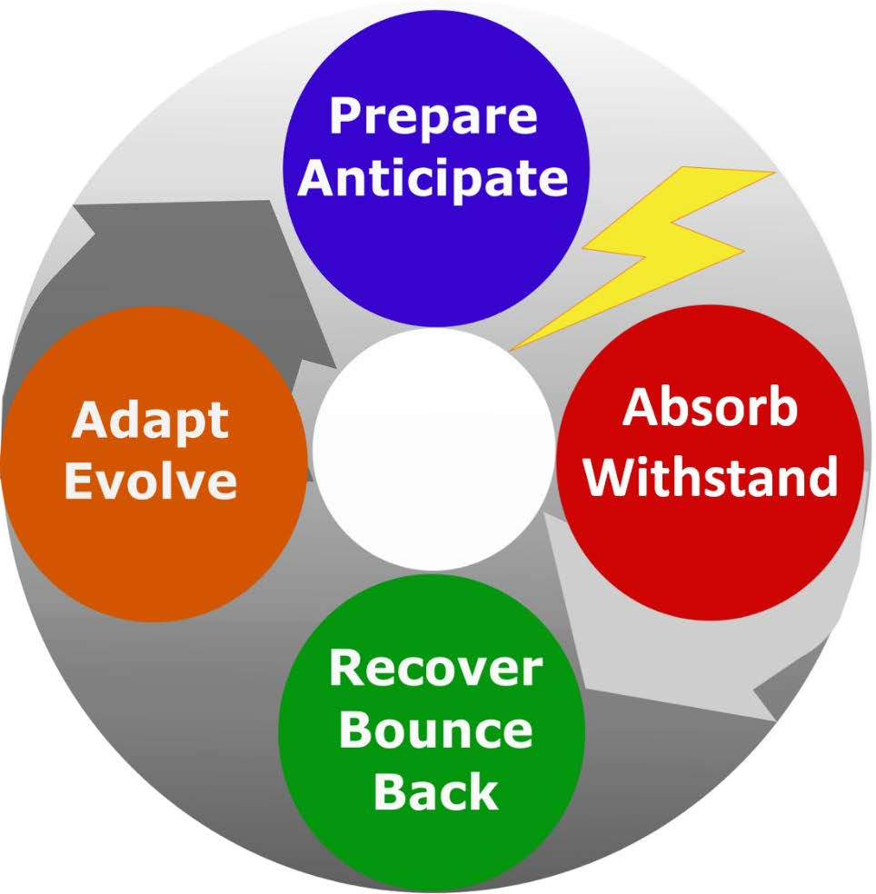
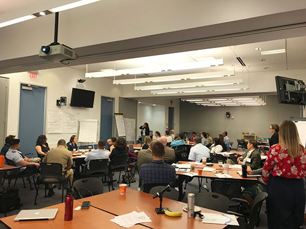

RESILIENCE INTEGRATED ACTION TEAM
"The MTS Resilience IAT (R-IAT) was established to focus on cross-Federal agency knowledge co-production and governance in order to incorporate the concepts of resilience into the operation and management of the U.S. Marine Transportation System. For the purposes of this team, resilience is defined as the ability to prepare and plan for, resist, recover from, and more successfully adapt to the impacts of adverse events." from Presidential Policy Directive 21: Critical Infrastructure Security and Resilience

Value
The R-IAT seeks to affect future resilience policy and aid in delivering enhanced resilience programs through identifying, coordinating, and leveraging complementary Federal investments and activities related to MTS resilience.
Integrated Action Team Leads
- U.S. Army Corps of Engineers
- National Oceanic and Atmospheric Administration
Participating Agencies
- Bureau of Safety and Environmental Enforcement
- Environmental Protection Agency
- National Geospatial-Intelligence Agency
- National Oceanic and Atmospheric Administration
- U.S. Army Corps of Engineers
- U.S. Coast Guard
- U.S. Cybersecurity and Infrastructure Security Agency
- U.S. Maritime Administration (DOT)
- U.S. Navy
- U.S. Transportation Command
Activity and Milestones

and resiliency during the 2017 Hurricane Season
- June 2022: As a result of the collaboration between RIAT agencies, the CISA, USACE ERDC, and the Coastal Resilience Centers of Excellence Universities of Vanderbilt and Rhode Island have partnered to collaboratively develop a Marine Transportation System Resilience Assessment Guide. The Guide presents a process and resources for organizing and understanding the complicated systems that comprise the MTS. It also includes three case studies investigating 1) seismic resilience at the Port of Portland, 2) resilience of supply chains at the Tennessee/Cumberland Rivers, and 3) the interconnectivity of a network of ports in the Caribbean. The Guide and case studies were presented at a PIANC webinar on June 15th, 2022. A recording can be found here.
- In December 2021: The CMTS Maritime Resilience Integrated Action Team issued the third report in a series about the response and resilience of the marine transportation system after major hurricanes. This report, An Examination of Multi-Hazard Marine Transportation System (MTS) Response and Recovery Operations during the 2020 Hurricane Season,” assessed the impacts to ports from the 2020 hurricane season and the challenges to federal agencies to respond under pandemic. Three storms were examined in-depth, due to their impacts on the MTS: Hurricanes Laura, Sally, and Delta. The report may be found at: An Examination of Multi-Hazard Marine Transportation System (MTS) Response and Recovery Operations during the 2020 Hurricane Season.
- December 2020: Completed a report that incorporates impacts and observations of the 2018-2019 hurricane seasons into those from the 2017 hurricane season regarding the ways in which the MTS has become more resilient entitled "A Resilient Path Forward for the Marine Transportation System: Recommendations for Response and Recovery Operations from the 2017-2019 Hurricane Seasons".
- October 2020: Presented a Transportation Research Board (TRB) webinar on A Resilient Path Forward for the Marine Transportation System on findings from the 2017-2019 hurricane seasons.
- July 2020: Reported to the CMTS Coordinating Board on findings on agency actions, best practices, and preliminary recommendations for MTS agencies to increase preparedness for multi-hazard scenarios.
- May 2020: The RIAT hosted a team meeting to gather insights from members who had direct knowledge of their agency's actions to assist in the pandemic response and/or efforts that agencies are undertaking to prepare for the 2020 hurricane season. These members gave presentations on their agencies COVID-19 actions and unique challenges and best practices during the pandemic response.
- February 2020: MTS Resilience IAT hosted a virtual workshop entitled "Virtual Workshop - Impacts to the Marine Transportation System during the 2018 and 2019 Hurricane Seasons" as a follow up to the May 2018 workshop.
- November 2019: The University of Rhode Island publishes findings from contracted overarching study "Measuring Climate and Extreme Weather Vulnerability to Inform Resilience". The reports are entitled Report 1: A Pilot Study for North Atlantic Medium and High-Use Maritime Freight Notes and Report 2: Port Decision-Makers' Barriers to Climate and Extreme Weather Adaptation.
- December 2018: Completed report entitled "Reviewing the 2017 Hurricane Season: Recommendations for a Resilient Path Forward for Federal Agencies"
- July 2018: Reported to the CMTS Coordinating Board on findings for a review of MTS response and actions to increase resilience after the 2017 hurricane season
- May 2018: MTS Resilience IAT hosted a workshop entitled "Charting a Path toward a More Resilient MTS: A Workshop to Examine Lessons Learned from the 2017 Hurricane Season". This workshop included participants from DHS, NOAA, MARAD, Navy, USACE, NGA, and USCG, including individuals from regional offices impacted by the 2017 hurricane season.
- April 2018: Final update on University of Rhode Islands' contracted study entitled "Towards a Comparative Index of Seaport Climate Vulnerability: Developing Indicators from Open Data."
- Fall 2016: Develop a compendium and gap analysis of tools, metrics, and indices in Federal agencies and NGOs related to MTS Infrastructure Resilience.
- Summer 2016: Select a port region to evaluate a comprehensive approach infrastructure resilience and vulnerability.
- June 2016: Assembled and conducted a resilience panel at the 4th biennial CMTS—TRB Biennial Conference, held at the National Academy of Science, Washington, D.C.
- May 2016: Published Journal Paper and Fact Sheet: Feedback on joint-agency (USACE-NOAA) coastal resilience workshop.
- May 2016: Conducted a workshop with the R-IAT and researchers from University of Rhode Island (URI) to gather data and discuss relevant decisions for climate change resilience relevant to the MTS, especially ports.
- April 2016: Drafted a logic model to clarify R-IAT long-term goals along with short-term actions. The logic model is intended to guide new additions to R-IAT work plan.
- December 2015: Developed a summary public-facing U.S. Federal Activities Analyzing Marine Transportation System that outlines active participation and interests from each R-IAT agency with consideration of environmental and non-environmental resilience factors. The detailed version of the RFM fact sheet will remain a resource for the R-IAT.
- October 2015: Summarized results of MTS Resilience Factors ranking, including identification of agency activities, and discussion of agency priority interests in a 2015-2016 work plan for R-IAT members as approved by the Coordinating Board.
- June 2015: The Resilience IAT completed the "Quantification of Integrated Watershed System Resilience: A Tiered Method" fact sheet which is intended to provide decision makers with guidance and resilient alternatives for planning, feasibility studies, O&M, and engineering design.
- June 2015: The draft work plan was reviewed and approved by the R-IAT.
- March 2015: The Coordinating Board approved the R-IAT Terms of Reference.
- September 2014: The CMTS Coordinating Board approved the establishment of the MTS Resilience Integrated Action Team.
Resilience Resources
Our IAT Reports
- 4th Biennial CMTS TRB Biennial Conference
- Fact Sheet From The MTS Resilience Factors Matrix RFM
- Quantification Of Integrated Watershed System Resilience A Tiered Method
- Resilience Factors Matrix RFM U S Federal Activities Analyzing Marine Transportation System Resilience
- Marine Transportation System Resilience A Federal Agency Perspective
- NOAA Port Tomorrow Resilience Planning Tool
- CNAS USCG Port Recovery In The Aftermath Of Hurricane Sandy
- TRB Making U S Ports Resilient As Part Of Extended Intermodal Supply Chains
- USACE Quantification Of Integrated Watershed System Resilience A Tiered Method
- 2017 Hurricane Season Recommendations